What is Project CANnonball?
Project CANnonball is a unified desktop diagnostics application for engineers working with real-time CAN bus data across heavy-duty defense and commercial vehicles.
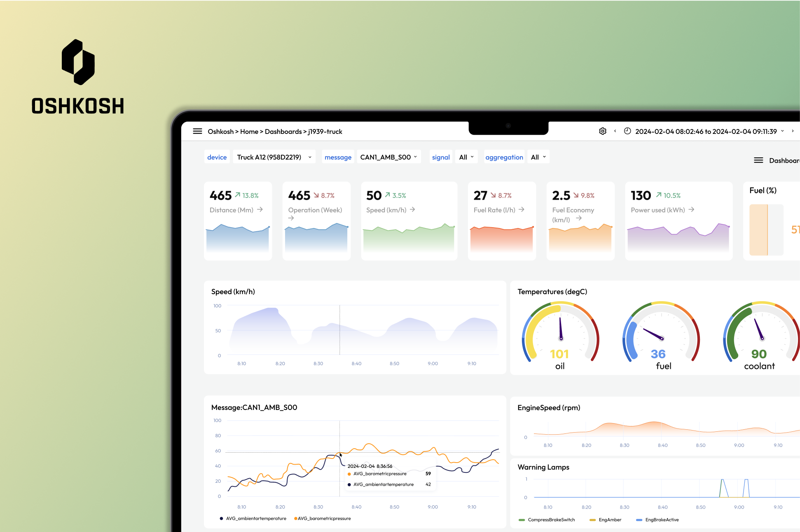
UX-Madison Capstone · Dashboard and Visual Design
A semester-long capstone project with Oshkosh Corporation. I came in knowing nothing about CAN bus data or vehicle diagnostics, and designed a unified desktop tool for two very different types of engineers who needed completely different things from the same system.

Project CANnonball is a unified desktop diagnostics application for engineers working with real-time CAN bus data across heavy-duty defense and commercial vehicles.
I designed the full user interface across research, workflow definition, low-fidelity wireframes, visual design, and two rounds of usability testing with Oshkosh engineers.
Research
Learning from scratch, through the people who actually do the work.
I came into this project with no background in CAN protocols, DBC files, or vehicle diagnostics. Rather than trying to self-study my way in, I treated the engineering team as my primary source of truth. We interviewed 10+ people across developer, tester, controls, autonomous, and embedded systems roles to understand how they diagnosed vehicle data in real working conditions.
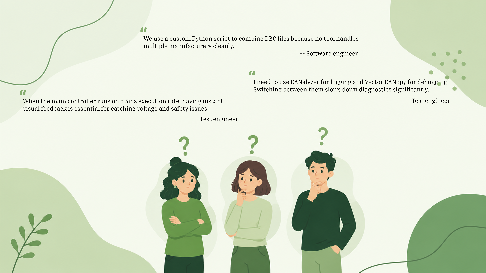
Interviews with 10+ developers, testers, and engineering stakeholders — the foundation for every design decision that followed
The interviews confirmed what the user split had suggested: test engineers needed immediacy and clarity, developers needed depth and precision. Designing for one without the other would mean the tool only served half its users well.
The Challenge
One system, two users, completely different needs.
Oshkosh Corporation builds heavy-duty defense and commercial vehicles. Their engineers interact with CAN bus data daily, but two very different types of engineers were using the same diagnostic tools in fundamentally different ways.
Working in real time, often in the field. Needs to immediately spot warnings, anomalies, and signal states without digging through data. Speed and clarity are everything.
Working at the code level. Needs detailed data tables, error logs, trace playback, and DBC file management. Cares about exact values, timestamps, and signal history.
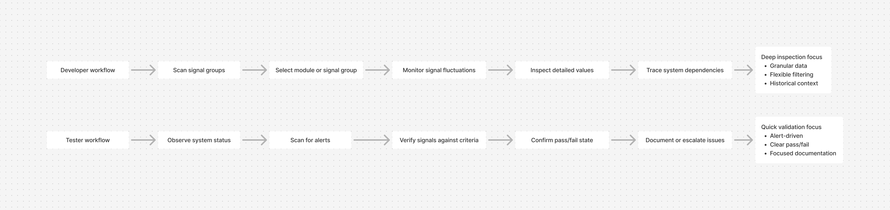
Engineers switching between multiple tools to complete a single diagnostic workflow
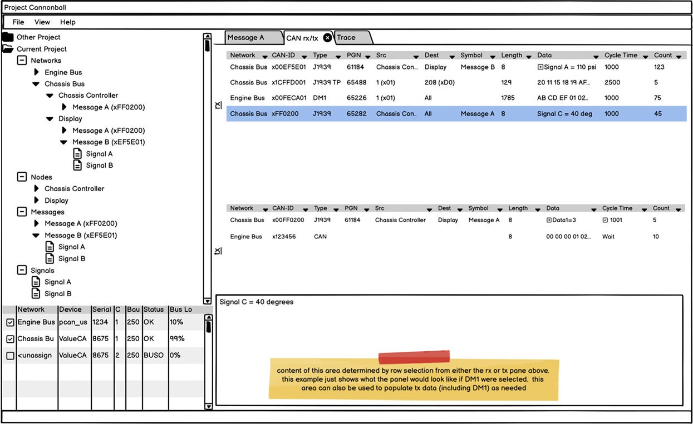
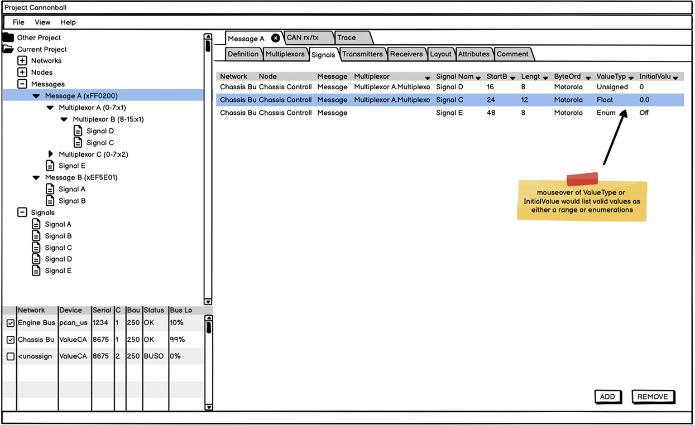
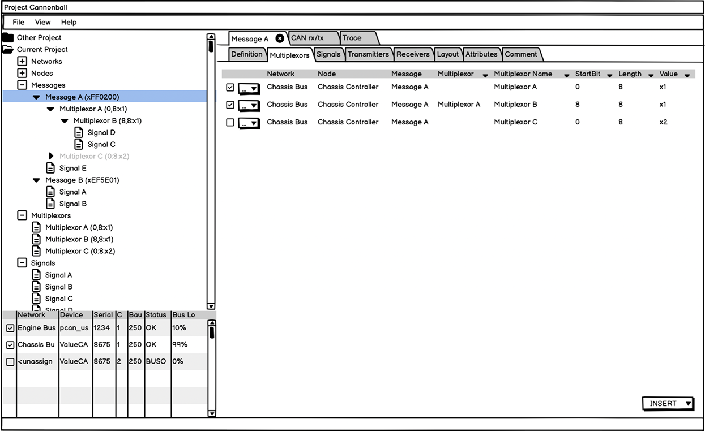
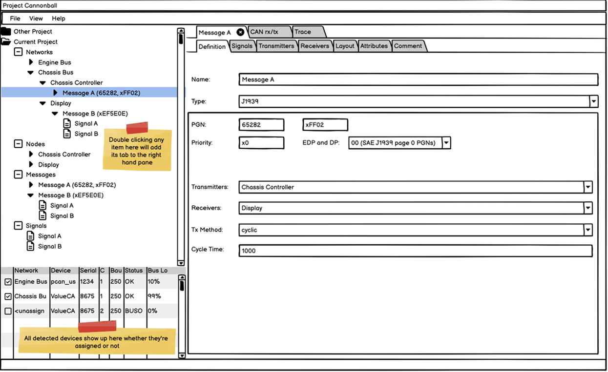
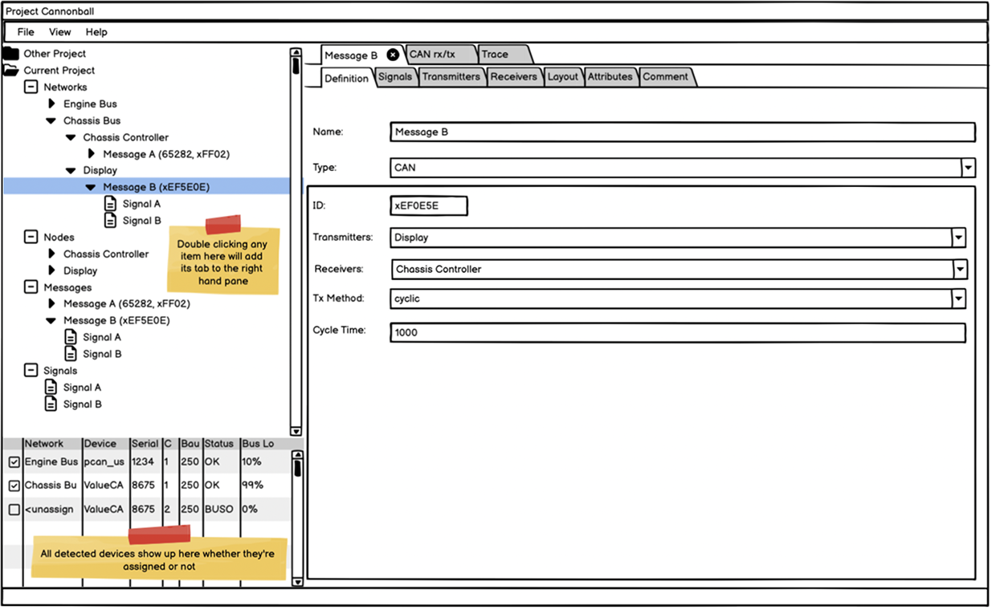
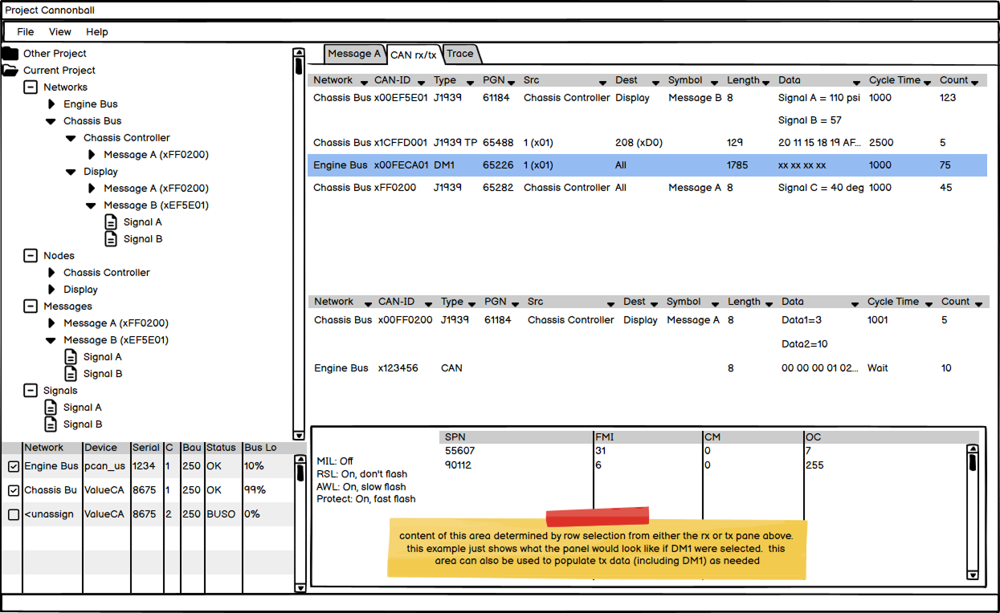
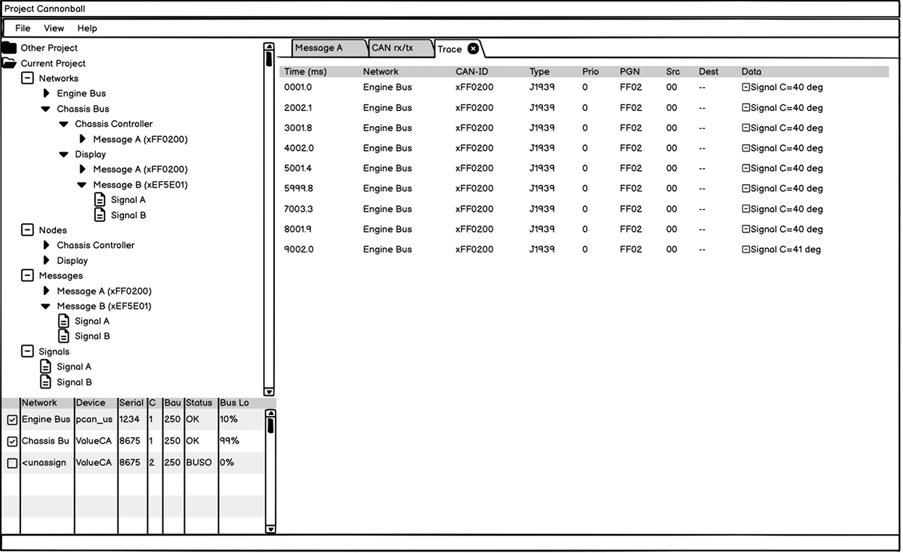
Original UI review — dense panes and repeated table layouts made priority, status, and next action difficult to scan
Design Approach
Two interfaces inside one system.
Before opening Figma, I sketched the full structure in Balsamiq to establish hierarchy and flow. The design split into two interface modes — each tuned to how that user works — while sharing the same underlying data and navigation shell.
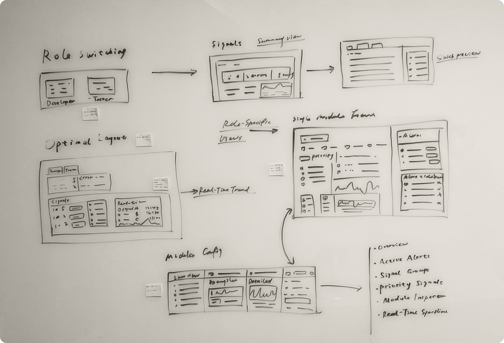
Early design exploration — role switching, signal summaries, and modular views sketched before moving into wireframes
Overview dashboard with connection status, bus load, warning flags, and key signal states at the top level. Real-time updates, live and pause mode, and color-coded status indicators.
Detailed receive view, error logs, trace playback with timeline annotation, and integrated DBC file management for merging and editing across manufacturers.
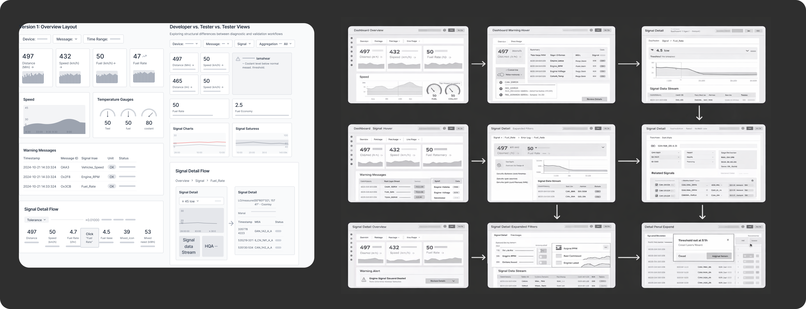
Low-fidelity wireframes — dashboard states, warning details, filters, and signal inspection flows defined before visual design
Iteration
We ran two rounds of usability testing with Oshkosh engineers. The first round went well overall, but engineers kept pausing at voltage and bus load readings. The numbers were correct, but a number alone did not show whether something was trending toward a problem.
A number shows a value. A line shows what is about to happen.
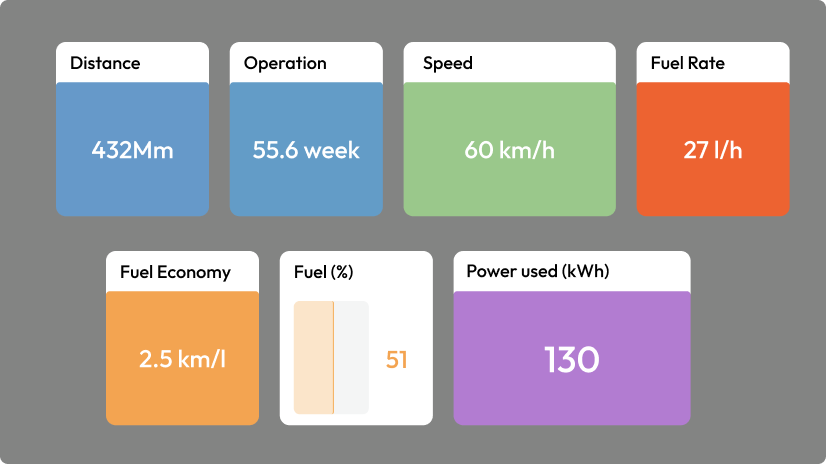
Static numbers — no sense of whether a value was rising, falling, or stable
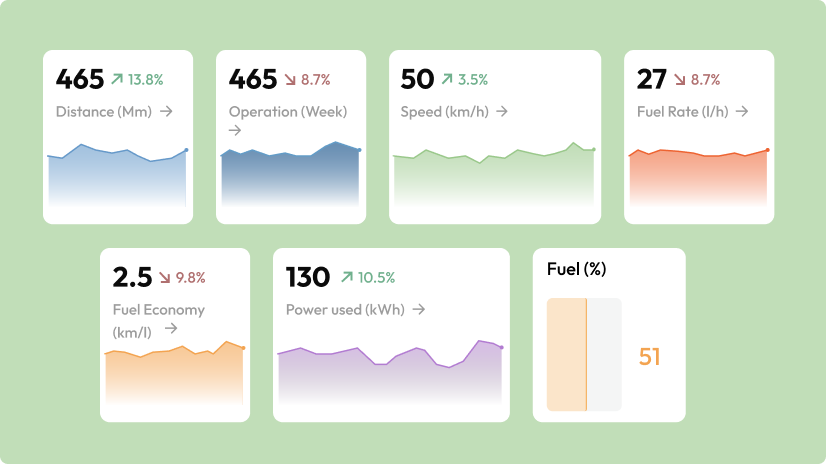
Real-time line graphs added — direction of change visible at a glance
The fix was specific to the test engineer interface, where speed of interpretation matters most. The developer interface kept its dense tabular format because developers need precision. The second test round returned a 5 out of 5 satisfaction score.
Solution
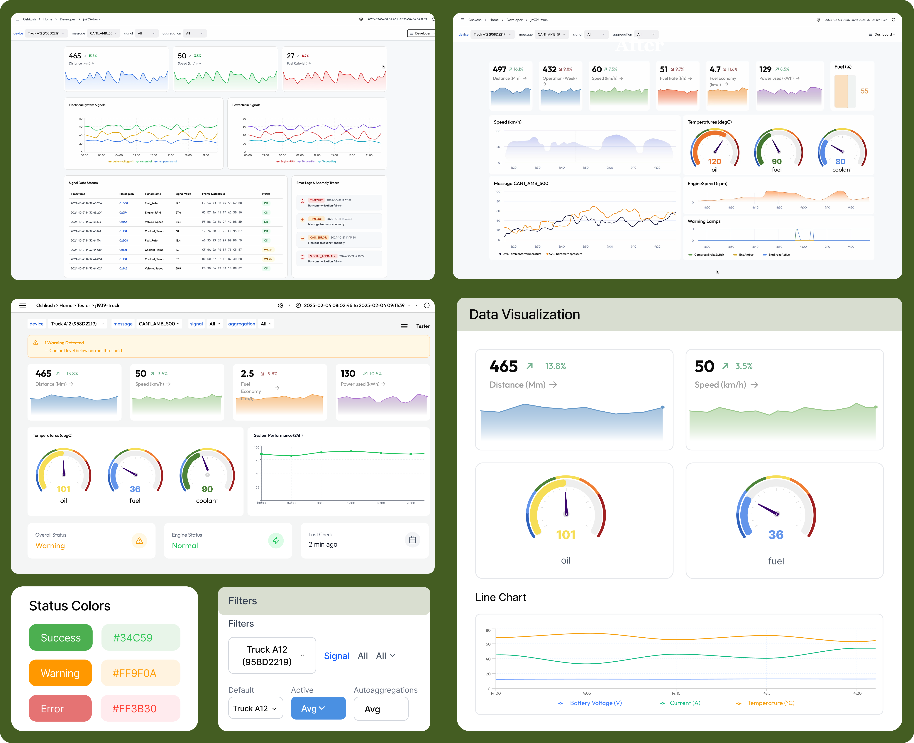
Final dashboard — system status, live signal monitoring, and real-time visualization in one view
Results
Reflection
I started this project not knowing what CAN bus was, what a DBC file did, or how vehicle diagnostics actually worked. That gap could have been a liability. Instead, I treated it as the reason to listen more carefully than I normally would. Every interview became a chance to understand not just what engineers wanted, but how they thought about data, what made something feel trustworthy, and where existing tools were quietly failing them.
The two-interface structure came directly from that listening. If I had assumed both user types needed the same thing, I would have designed one compromise interface that served neither well. Test engineers needed to react fast. Developers needed to dig deep. Holding both needs inside one system was the actual design challenge — and it only became visible because of the research that came first.
The usability test that added the line graph is the other thing I keep coming back to. The engineers were not complaining about the design — they were doing their jobs and the limitation surfaced naturally. A static number does not tell you if something is about to fail. A line going upward does. Watching that insight become a concrete change, and then seeing the satisfaction score land at 5 out of 5, made the value of testing with real users doing real tasks concrete in a way that sticks.
Back to all work